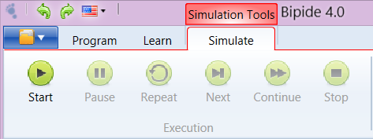
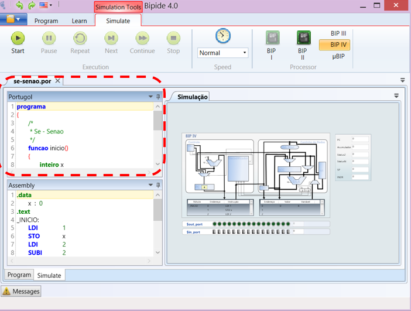
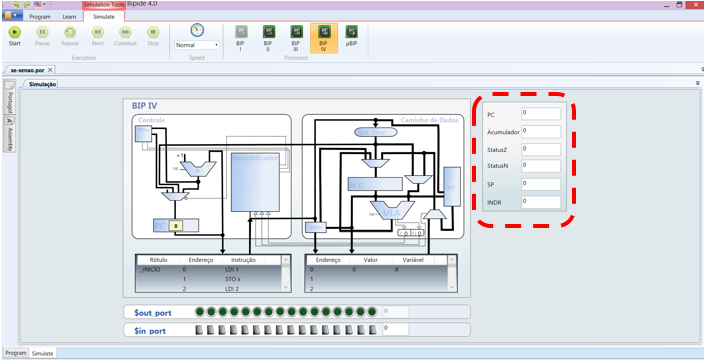

Possibilita a execução e simulação de programas Portugol sobre a arquitetura dos processadores BIP I, BIP II, BIP III e BIP IV e µBIP.
Menu Simulação
Apresenta os controles para simulação dos programas:
- Simular - Inicia a simulação de um programa
- Pausar - Interrompe temporariamente a simulação do programa
- Repetir - Repete a última instrução
- Próximo - Simula a próxima instrução do programa
- Continuar - Continua a simulação do programa até o seu final
- Parar - Interrompe a simulação do programa
Velocidade

Permite controlar a velocidade com que ocorre a simulação do programa.
Processador

Permite selecionar o modelo do processador utilizado na simulação:
- BIP I - Exibe a processador BIP I
- BIP II - Exibe a processador BIP II
- BIP III - Exibe a processador BIP III
- BIP IV - Exibe a processador BIP IV
Linguagem de Alto Nível
Exibe o programa Portugol ou C que está sendo simulado. A linha do programa que está sendo simulada aparece destacada.
Assembly
Exibe o código assembly gerado pelo compilador. A linha do programa que está sendo simulada aparece destacada. É destacado também o conjunto de instruções assembly que correspondem a uma linha do programa Portugol, permitindo ao usuário verificar quais instruções assembly foram geradas para executar uma instrução Portugol.
Processador BIP

Exibe o código assembly gerado pelo compilador. A linha do programa que está sendo simulada aparece destacada. É destacado também o conjunto de instruções assembly que correspondem a uma linha do programa Portugol, permitindo ao usuário verificar quais instruções assembly foram geradas para executar uma instrução Portugol.
Entrada e Saída

Exibe interruptores e LEDS utilizados no processador BIP IV para operações de Entrada e saída.
Registradores
Exibe os valores dos registradores durante a execução do programa.
Descrição

Exibe a descrição da instrução que está sendo executada.